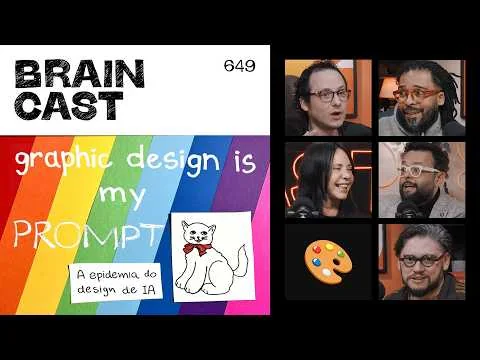

Referências

Braincast 650 — Música de IA: autoria, royalties e o futuro dos artistas

Tecnoblog - WhatsApp quer facilitar a organização de eventos

arvro - NOVA DATA MARCADA PARA APOCALIPSE É GOLPE, AVISA MIGUEL NICOLELIS

B9 - Graphic Design Is My Prompt: a epidemia dos cartazes de IA - BRAINCAST 649

Zuckerberg “rouba” arroba da banda Muse nas redes sociais

Páginas antigas de baixo valor podem afetar a recuperação do site
CORTES - Leon e Nilce - OpenAI vai SALVAR ou DESTRUIR o mundo?

Extra - WhatsApp passará a cobrar mensagens no modelo Business API a partir de outubro

TechCrunch - Conselho da Automattic força Matt Mullenweg a licença temporária
Página 2 de 10